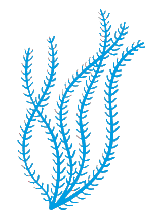

Vermentino Colli di Luni DOC 0,375 l
15 €Vini bianchi - Azienda Vinicola Arrigoni, Liguria

La carta vini di Coralì a Varazze raccoglie 79 referenze: mezze bottiglie, bianchi, bollicine, champagne, rosé e rossi. La selezione segue la stessa misura della cucina: bottiglie leggibili, servizio preciso, abbinamenti senza invadenza.

Il formato giusto per assaggiare. Bottiglie da 0,375 l tra bianchi, bollicine, rosé e rossi, pensate per tavoli piccoli e abbinamenti puntuali.
Vini bianchi - Azienda Vinicola Arrigoni, Liguria
Vini bianchi - Durin, Liguria
Vini bianchi - Cantina Roeno, Veneto
Vini bianchi - Monchiero Carbone Winery, Piemonte
Vini bianchi - Ca Rugate, Veneto - Biologico
Vini bianchi - Donnafugata, Sicilia
Bollicine - Andreola, Veneto
Bollicine - Contadi Castaldi, Lombardia
Vini rosé - Rossese, Gajaudo, Liguria
Vini rossi - Cantina Grillo, Liguria
Vini rossi - Gianni Doglia, Piemonte
Vini rossi - Monchiero Carbone, Piemonte
Metodo, acidità e finezza. Dal Prosecco al Metodo Classico, con selezioni da Veneto, Liguria, Lombardia, Trentino e Piemonte.
Andreola, Veneto
Andreola, Veneto
Pigato - Durin, Liguria
Le Vedute, Lombardia
Azienda Agricola San Cristoforo, Lombardia
Bertè & Cordini - Cantine Montagna, Lombardia
Dorigati, Trentino Alto-Adige
Cascina Pastori Colombo, Piemonte
Cascina Pastori Colombo, Piemonte
Spuma rosata e passo asciutto. Quattro etichette rosé per aperitivi e piatti di mare più saporiti.
Cascina Pastori Colombo, Piemonte
Le Vedute, Lombardia
Società Agricola Sui Nui, Veneto
Azienda Agricola Gorgo, Veneto - Biologico
Maison classiche, servizio essenziale. Una selezione di cuvée francesi per crudi, ostriche e momenti importanti.
Brut Royal
Collection 244
Brut Imperial
Brut Réserve
Grand Brut
Extra Brut - Biologico
Brut Nature - Biologico
Origini diverse, stessa precisione. Francia, Germania, Austria, Slovenia, Spagna e Sudafrica completano la cantina.
Francia - Azienda Vinicola Château Malartic-Lagravière, Bordeaux
Francia - Henri De Villamont, Borgogna
Francia - Henri De Villamont, Borgogna
Francia - Domaine Hamelin, Borgogna
Francia - Domaine La Rouillere, Côtes de Provence
Germania - Lisa Bunn Und Bastian Strebel Gbr, Nierstein - Vegano
Austria - Domäne Wachau, Loibenberg
Slovenia - Cantina Dolfo, Dobrovo
Spagna - Eudald Massana Noya, Catalogna - Biologico
Sudafrica - Spier, Stellenbosch Western Cape
Mineralità, sapidità, costa. Liguria, Piemonte, Alto Adige, Friuli, Sardegna, Marche, Abruzzo, Campania e Sicilia per accompagnare crudi, primi e pescato.
Azienda Agricola Grillo, Liguria
Azienda Vinicola Durin, Liguria
Azienda Vinicola Arrigoni, Liguria
Azienda Vinicola Arrigoni, Liguria
Azienda Vinicola Arrigoni, Liguria
Monchiero Carbone Winery, Piemonte - Biologico
Cecilia Monte, Piemonte
Azienda Agricola La Ghibellina, Piemonte - Biologico
Azienda Agricola Roeno, Trentino Alto-Adige
Azienda Agricola Roeno, Trentino Alto-Adige
Tenuta J. Hofstätter, Alto Adige
Azienda Agricola Gorgo, Veneto - Biologico
Azienda Agricola Gorgo, Veneto - Biologico
Azienda Vinicola Ronco dei Tassi, Friuli Venezia Giulia
Azienda Vinicola Ronco dei Tassi, Friuli Venezia Giulia
Audarya Azienda Vitivinicola, Sardegna
Umani Ronchi, Marche - Biologico
Spinelli Stagioni, Abruzzo
Spinelli Stagioni, Abruzzo
Cantina La Capranera, Campania
Cantina La Capranera, Campania
San Salvatore 1988, Campania
San Salvatore 1988, Campania
Donnafugata, Sicilia
Donnafugata, Sicilia
Donnafugata, Sicilia
Davide Fregonese, Sicilia
Toni salini e frutto misurato. Rosati liguri e pugliesi con struttura leggera e finale gastronomico.
Ciliegiolo e Sangiovese - Azienda Vinicola Arrigoni, Liguria
Rossese - Gajaudo, Liguria
Versante Agricole Vallone, Puglia - Vegano
Versante Agricole Vallone, Puglia - Vegano
Rossi agili, serviti con misura. Etichette pensate per non sovrastare il pescato e per sostenere piatti più strutturati.
Cantina Grillo, Liguria
Cascina Pastori Colombo, Piemonte
Azienda Agricola Gianfranco Bovio, Piemonte
Monchiero Carbone Winery, Piemonte
Azienda Fornacelle, Toscana
Versante Agricole Vallone, Puglia
La pagina menu raccoglie crudi, antipasti, primi e secondi della carta Coralì, con descrizioni e prezzi.